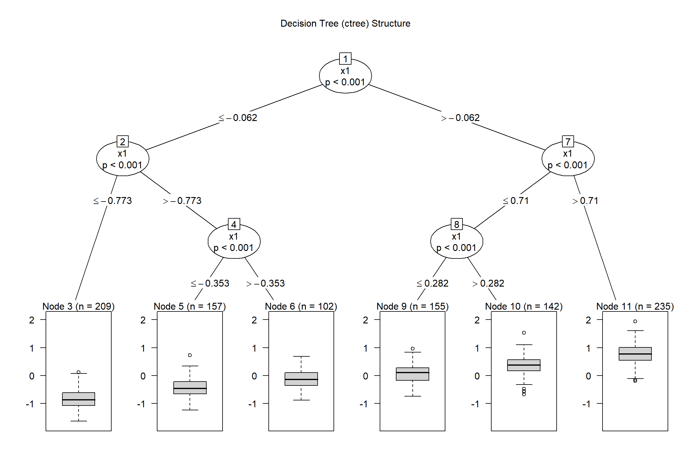

Examine how equally predictive models can yield different scientific conclusions and compare naive, classical, and IPD-based inference.
Overview
In “Performance is not enough: the story of Rashomon’s quartet” (Biecek et al., 2023), four different models (linear regression, decision trees, random forests, and neural networks) achieve near-identical predictive performance on the same dataset. However, their interpretations vary significantly. In this module, we will:
Fit each model on a training set.
Evaluate their predictive performance on a testing set.
Demonstrate how the naive, classical, and IPD-based inference results differ.
Note: We will replicate the results of the Rashomon Quartet analysis following:
https://github.com/MI2DataLab/rashomon-quartet
Background on the Rashomon Quartet
The underlying datasets are synthetically generated to include three covariates, \(\boldsymbol{X} = (X_1, X_2, X_3)^\top\), so that
\[
\boldsymbol{X} = (X_1, X_2, X_3)^\top \sim \mathcal{N}_3 \left(\boldsymbol{0}, \Sigma\right), \quad \Sigma_{ij} = \begin{cases} 1 & i=j,\\ 0.9 & i \neq j\end{cases}
\] The outcomes, \(Y\), are then generated to depend only on \(X_1\) and, to a lesser extent, \(X_2\), given by
Note:\(X_3\) does not appear in the true data generating mechanism, but is highly correlated with \(X_1\) and \(X_2\).
Two independent batches of 1,000 observations (a training set and a testing set) are generated under this model. We will fit the four candidate models on the 1,000-row training data, and evaluate them separately on the 1,000-row testing data. As we will show, all four achieve \(R^2 \approx 0.729\) and \(\mathrm{RMSE} \approx 0.354\) on the testing set. However, their interpretations diverge:
Linear regression captures a near-linear approximation of \(\sin\left(\tfrac{3X_{1} + X_{2}}{5}\right)\).
Decision tree approximates the nonlinear relationship via a small set of splits.
Random forest produces a smooth ensemble derivative of the tree.
Neural network learns a different nonlinear basis with hidden units.
In addition to comparing interpretability across models, we will demonstrate how to perform valid downstream inference for \(Y\) on \(\boldsymbol{X}\) when \(Y\) is only partially observed. We will:
Train each predictive model on the full 1,000-row training set.
Predict on all 1,000 testing observations.
Randomly split the 1,000 testing rows into two groups:
Labeled subset (with true \(Y\) observed).
Unlabeled subset (with only predicted \(f\)).
In the labeled subset, regress \(Y\) on \(\boldsymbol{X}\) (“Classical”).
In the unlabeled subset, regress \(f\) on \(\boldsymbol{X}\) (“Naive”).
Combine the two subsets and use ipd::ipd() to correct bias and variance.
This mirrors realistic scenarios where the analytic dataset (here the testing set) has only some observations labeled, and we want to use model predictions for the rest while still making valid inference.
Setup and Data
# Install if needed:# install.packages(c("ipd","DALEX","partykit","randomForest","neuralnet","GGally","tidyverse"))library(ipd) # Inference with Predicted Datalibrary(DALEX) # Model Explanation
Welcome to DALEX (version: 2.5.3).
Find examples and detailed introduction at: http://ema.drwhy.ai/
Additional features will be available after installation of: ggpubr.
Use 'install_dependencies()' to get all suggested dependencies
library(partykit) # Decision Trees
Loading required package: grid
Loading required package: libcoin
Loading required package: mvtnorm
library(randomForest) # Random Forests
randomForest 4.7-1.2
Type rfNews() to see new features/changes/bug fixes.
── Conflicts ────────────────────────────────────────── tidyverse_conflicts() ──
✖ dplyr::combine() masks randomForest::combine()
✖ dplyr::compute() masks neuralnet::compute()
✖ dplyr::explain() masks DALEX::explain()
✖ dplyr::filter() masks stats::filter()
✖ dplyr::lag() masks stats::lag()
✖ ggplot2::margin() masks randomForest::margin()
ℹ Use the conflicted package (<http://conflicted.r-lib.org/>) to force all conflicts to become errors
Read-In the Training and Testing Data
We have included two CSV files from the MI2DataLab/rashomon-quartet repository on GitHub. Note that these CSVs are semicolon-delimited.
# Use read_delim to parse semicolonstrain <-read_delim("data/rq_train.csv", delim =";", col_types =cols(), show_col_types =FALSE)test <-read_delim("data/rq_test.csv", delim =";", col_types =cols(), show_col_types =FALSE)# Show the first few rows of eachglimpse(train)
# A tibble: 4 × 3
Model R2 RMSE
<chr> <dbl> <dbl>
1 Linear Regression 0.729 0.354
2 Decision Tree 0.729 0.354
3 Random Forest 0.728 0.354
4 Neural Network 0.730 0.352
Interpretation: All four models (Linear Regression, Decision Tree, Random Forest, Neural Network) deliver essentially identical predictive performance on the testing set:
We now take a quick look at each model’s internal structure or summary.
Note:
Often, in practice, we do not know the operating characteristics of the predictive model or have access to its training data.
IPD methods are distinct in that they are agnostic to the source or form of these ‘black-box’ predictions
Decision Tree Visualization
plot(model_dt, main ="Decision Tree (ctree) Structure")

The tree has depth 3, with splits on \(x_1, x_2, x_3\) that approximate \(\sin\left(\tfrac{3X_{1} + X_{2}}{5}\right)\) piecewise.
Linear Regression Summary
summary(model_lm)
Call:
lm(formula = y ~ x1 + x2 + x3, data = train)
Residuals:
Min 1Q Median 3Q Max
-1.68045 -0.24213 0.01092 0.23409 1.26450
Coefficients:
Estimate Std. Error t value Pr(>|t|)
(Intercept) -0.01268 0.01114 -1.138 0.255
x1 0.48481 0.03001 16.157 < 2e-16 ***
x2 0.14316 0.02966 4.826 1.61e-06 ***
x3 -0.03113 0.02980 -1.045 0.296
---
Signif. codes: 0 '***' 0.001 '**' 0.01 '*' 0.05 '.' 0.1 ' ' 1
Residual standard error: 0.352 on 996 degrees of freedom
Multiple R-squared: 0.7268, Adjusted R-squared: 0.726
F-statistic: 883.4 on 3 and 996 DF, p-value: < 2.2e-16
The OLS coefficients show how the linear model approximates the underlying sine function. In particular, the slope on \(x_1\) will be roughly an average of this over the training distribution.
Random Forest Summary
model_rf
Call:
randomForest(formula = y ~ x1 + x2 + x3, data = train, ntree = 100)
Type of random forest: regression
Number of trees: 100
No. of variables tried at each split: 1
Mean of squared residuals: 0.1193538
% Var explained: 73.58
We see OOB MSE and variance explained on the training data. The forest builds many trees of depth >3 and averages them to approximate the sine structure.
Neural Network Topology
plot(model_nn, rep ="best", main ="Neural Network (8,4) Topology")
This diagram shows two hidden layers (8 units \(\to\) 4 units) with activation functions that capture nonlinearity. The network approximates \(\sin\left(\tfrac{3X_{1} + X_{2}}{5}\right)\) more flexibly than the decision tree or random forest.
Variable Importance (DALEX)
Next, we compute variable importance for each model via DALEX::model_parts(). We request type="difference" so that importance is measured in terms of loss of performance (RMSE) when that variable is permuted.
imp_dt <-model_parts(exp_dt, N =NULL, B =1, type ="difference")imp_lm <-model_parts(exp_lm, N =NULL, B =1, type ="difference")imp_rf <-model_parts(exp_rf, N =NULL, B =1, type ="difference")imp_nn <-model_parts(exp_nn, N =NULL, B =1, type ="difference")plot(imp_dt, imp_nn, imp_rf, imp_lm)
Warning: Using `size` aesthetic for lines was deprecated in ggplot2 3.4.0.
ℹ Please use `linewidth` instead.
ℹ The deprecated feature was likely used in the ingredients package.
Please report the issue at
<https://github.com/ModelOriented/ingredients/issues>.
Interpretation:
Each model ranks features \((x_{1},x_{2},x_{3})\) by their impact on predictive accuracy.
Because \(\mathbf{x}\) are correlated, some models (e.g. tree, forest) may split differently than linear regression or neural network.
Partial-Dependence Plots (DALEX)
We now generate partial-dependence (PD) profiles for each feature under each model via DALEX::model_profile(). This shows how each model’s predicted \(f\) changes when we vary one feature at a time, averaging out the others.
pd_dt <-model_profile(exp_dt, N =NULL)pd_lm <-model_profile(exp_lm, N =NULL)pd_rf <-model_profile(exp_rf, N =NULL)pd_nn <-model_profile(exp_nn, N =NULL)plot(pd_dt, pd_nn, pd_rf, pd_lm)
Warning: `aes_string()` was deprecated in ggplot2 3.0.0.
ℹ Please use tidy evaluation idioms with `aes()`.
ℹ See also `vignette("ggplot2-in-packages")` for more information.
ℹ The deprecated feature was likely used in the ingredients package.
Please report the issue at
<https://github.com/ModelOriented/ingredients/issues>.
Interpretation:
For \(x_{1}\), the Linear Regression PD is a straight line.
The Decision Tree PD is piecewise-constant.
The Random Forest PD is smoother but still stepwise.
The Neural Network PD approximates the sine shape.
Because \(x_{3}\) does not appear in the generating formula, its PD should be nearly flat—though correlation can induce slight structure.
Inference with Predicted Data (IPD)
We now demonstrate how to perform valid inference in the testing set when only some test rows have true \(Y\). Specifically, we:
Randomly split the 1,000 testing rows into:
A labeled subset of size \(n_l\) (we choose 10%, but this can be adjusted).
An unlabeled subset of size \(n_u = 1,000 - n_l\).
In the labeled subset, regress \(Y\) on \(X_1\), \(X_2\), and \(X_3\) (Classical).
In the unlabeled subset, regress \(f\) on \(X_1\), \(X_2\), and \(X_3\) (Naive).
Use both subsets in an IPD pipeline and run:
ipd_res <-ipd(formula = y - f ~ x1 + x2 + x3,data = test_labeled,unlabeled_data = test_unlabeled,method ="pspa",model ="ols")
to obtain bias-corrected estimates of \(\beta_1\), \(\beta_2\), and \(\beta_3\).
Note: Instead of supplying one stacked dataset and the column name for the set labels, we can alternativel supply the labeled and unlabeled data separately.
set.seed(12345)# Predict outcomes in the testing setipd_data <- test |>mutate(preds_lm =c(predict(model_lm, newdata = test)),preds_dt =c(predict(model_dt, newdata = test)),preds_rf =c(predict(model_rf, newdata = test)),preds_nn =c(predict(model_nn, newdata = test)))# Randomly split the testing set into labeled and unlabeled subsetsfrac_labeled <-0.1n_test <-nrow(ipd_data)n_labeled <-floor(frac_labeled * n_test)labeled_idx <-sample(seq_len(n_test), size = n_labeled)test_labeled <- ipd_data |>slice(labeled_idx) |>mutate(set_label ="labeled")test_unlabeled <- ipd_data |>slice(-labeled_idx) |>mutate(set_label ="unlabeled")
Warning: `geom_errorbarh()` was deprecated in ggplot2 4.0.0.
ℹ Please use the `orientation` argument of `geom_errorbar()` instead.
`height` was translated to `width`.
Interpretation of Results
The Naive estimates are biased due to the prediction error and has artificially narrow confidence intervals.
The Classical is our benchmark, as it is unbiased, but has wider CI’s
The IPD methods cover the Classical estimates and have wider CI’s to account for the prediction uncertainty.
Data Distribution: Train vs Test (GGally::ggpairs)
Finally, we visualize pairwise relationships among \((x_{1},x_{2},x_{3},y)\) for train vs test. This confirms that train and test were drawn from the same synthetic distribution.
both <-bind_rows( train |>mutate(label ="train"), test |>mutate(label ="test"))ggpairs( both,columns =c("x1", "x2", "x3", "y"),mapping =aes(color = label, alpha =0.3),lower =list(continuous =wrap("points", size =0.5, alpha =0.3),combo =wrap("facethist", bins =20) ),diag =list(continuous =wrap("densityDiag", alpha =0.4, bw ="SJ") ),upper =list(continuous =wrap("cor", size =3, stars =FALSE) )) +theme_minimal() +labs(title ="Pairwise Distribution: Train vs Test (x1,x2,x3,y)",subtitle ="Color = train (blue) vs test (pink)" )
Interpretation:
The diagonals show almost identical marginal distributions of \(x_{1},x_{2},x_{3},y\) in train vs test.
The off-diagonals confirm the covariance structure \(\Sigma\) is consistent across both sets.
Summary and Takeaways
Predictive Performance:
Linear Regression, Decision Tree, Random Forest, and Neural Network each achieve nearly identical test set performance (\(R^2 \approx 0.729, \mathrm{RMSE} \approx 0.354\)).
Model Interpretability:
Variable Importance and Partial-Dependence plots highlight how each model “tells a different story” about which features matter and how \(y\) responds to \(x_{1},x_{2},x_{3}\).
The Neural Network’s PD best tracks the true sine function; the tree’s PD is piecewise-constant; the forest’s PD is smoothed piecewise; the linear PD is a straight line.
Inference on Predicted Data (IPD):
By randomly splitting the test set into “labeled” and “unlabeled” halves, we simulate a real-world scenario where only some new observations have true \(y\).
Naive regression of \(f \sim x_{1} + x_{2} + x_{3}\) on the unlabeled set is biased due to prediction error.
Classical regression of \(y \sim x_{1} + x_{2} + x_{3}\) on the labeled set is unbiased but less efficient.
IPD methods combine the labeled/unlabeled sets to correct bias and properly estimate variance.
Key Lesson:
“Performance is not enough.” Even models with identical \(R^2\) can lead to very different bias and variance in downstream inference on covariate effects. IPD provides a principled correction when using model predictions in place of true outcomes for some observations.
References
Biecek, Przemysław, et al. “Performance is not enough: The story told by a Rashomon Quartet.” Journal of Computational and Graphical Statistics 33.3 (2024): 1118-1121.